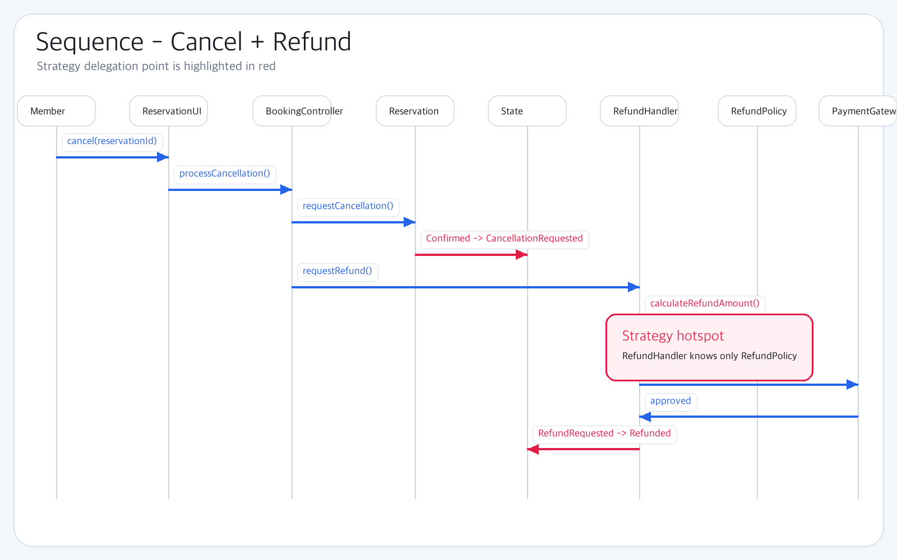
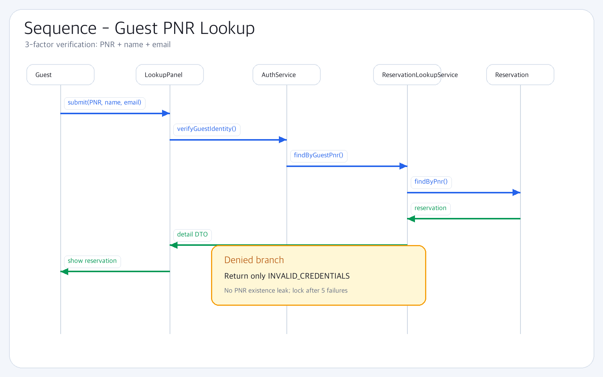

Sequence Diagram — iter 2 신규
cancelRefund · lookupReservation 두 시나리오
기존 bookFlight / memberBookingTicket / adminOperations은 보고서 누적
cancelRefund-iter2
8 lifelines · 14 messages

cancelRefund-iter2.png
AmaterasUML PNG export · Strategy 위임 핵심
lookupReservation-iter2
6 lifelines · 8 messages

lookupReservation-iter2.png
AmaterasUML PNG export · Guest 3중 검증